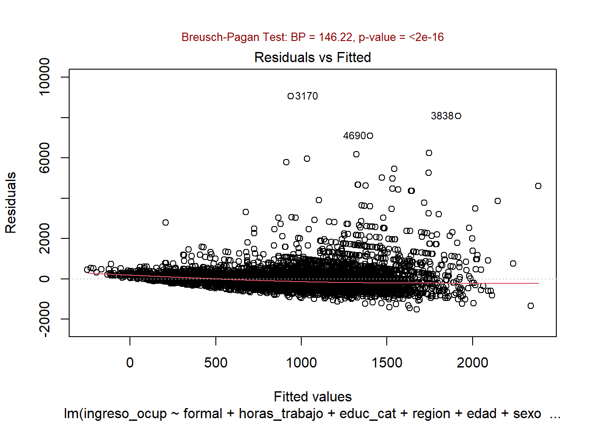
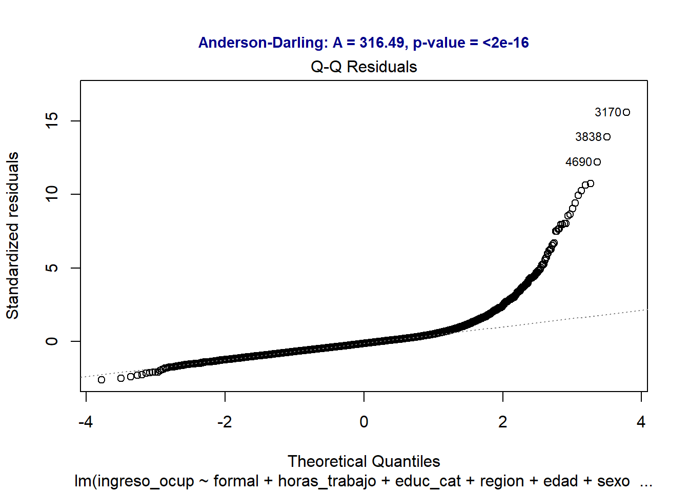
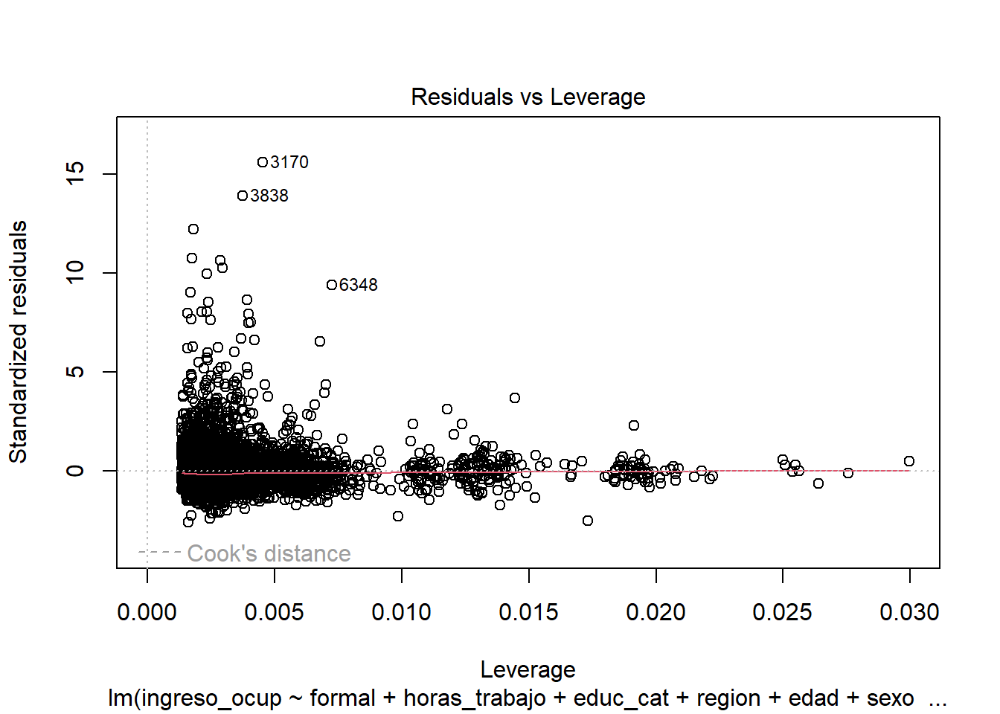

| Término | Estimación | Error Est. | Estadístico t | p-valor |
|---|---|---|---|---|
| (Intercept) | -31.39 | 80.12 | -0.39 | 6.95e-01 |
| formalSi | 301.37 | 18.74 | 16.08 | 4.34e-57 |
| horas_trabajo | 10.69 | 0.51 | 21.08 | 1.88e-95 |
| educ_catPrimario | 103.33 | 57.91 | 1.78 | 7.44e-02 |
| educ_catSecundario | 237.63 | 57.30 | 4.15 | 3.41e-05 |
| educ_catSuperior | 606.55 | 58.63 | 10.35 | 6.90e-25 |
| regionGran Buenos Aires | 139.12 | 31.03 | 4.48 | 7.46e-06 |
| regionNoreste | -138.26 | 35.81 | -3.86 | 1.14e-04 |
| regionNoroeste | -135.49 | 27.32 | -4.96 | 7.28e-07 |
| regionPampeana | 92.24 | 27.12 | 3.40 | 6.75e-04 |
| regionPatagonia | 372.13 | 31.40 | 11.85 | 4.53e-32 |
| edad | 4.41 | 0.77 | 5.74 | 9.63e-09 |
| sexoMujer | -152.07 | 16.04 | -9.48 | 3.50e-21 |
| est_civilseparado o divorciado | -119.81 | 30.62 | -3.91 | 9.24e-05 |
| est_civilsoltero | -137.89 | 21.78 | -6.33 | 2.61e-10 |
| est_civilunido | -63.01 | 20.97 | -3.00 | 2.67e-03 |
| est_civilviudo | -183.93 | 64.60 | -2.85 | 4.42e-03 |
| ant_laboral1 a 5 años | -23.98 | 38.66 | -0.62 | 5.35e-01 |
| ant_laboral6 meses a 1 año | -81.54 | 49.31 | -1.65 | 9.82e-02 |
| ant_laboralEntre 3 y 6 meses | -52.46 | 52.69 | -1.00 | 3.19e-01 |
| ant_laboralMas de 5 años | 43.69 | 39.92 | 1.09 | 2.74e-01 |
| ant_laboralMenos de 1 mes | -92.42 | 84.89 | -1.09 | 2.76e-01 |
TP final de Regresión Avanzada
Consigna I: Regresión Lineal
Modelo 1:
Modelo de Selección Automática por Criterio de Información de Akaike (AIC). Se busca equilibrio entre bondad de ajuste y complejidad.
Summary del Modelo 1:
| R-squared | Adj. R-squared | Sigma (Res. Error) | F-statistic | p-value | DF |
|---|---|---|---|---|---|
| 0.33 | 0.327 | 582.379 | 149.845 | 0 | 6402 |
Modelo 2:
Modelo de Selección Automática por Criterio de Información Bayesiano (BIC). Este modelo se seleccionó bajo el principio de parsimonia.
Summary del Modelo 2:
| Término | Estimación | Error Est. | Estadístico t | p-valor |
|---|---|---|---|---|
| (Intercept) | -96.01 | 72.84 | -1.32 | 1.88e-01 |
| formalSi | 325.31 | 17.70 | 18.38 | 1.48e-73 |
| horas_trabajo | 10.68 | 0.51 | 21.09 | 1.67e-95 |
| educ_catPrimario | 114.44 | 57.82 | 1.98 | 4.78e-02 |
| educ_catSecundario | 249.28 | 57.21 | 4.36 | 1.34e-05 |
| educ_catSuperior | 618.68 | 58.51 | 10.57 | 6.49e-26 |
| regionGran Buenos Aires | 135.21 | 31.05 | 4.35 | 1.36e-05 |
| regionNoreste | -134.97 | 35.84 | -3.77 | 1.67e-04 |
| regionNoroeste | -134.54 | 27.35 | -4.92 | 8.93e-07 |
| regionPampeana | 89.02 | 27.13 | 3.28 | 1.04e-03 |
| regionPatagonia | 370.22 | 31.42 | 11.78 | 1.03e-31 |
| edad | 5.66 | 0.71 | 7.97 | 1.80e-15 |
| sexoMujer | -151.99 | 16.05 | -9.47 | 3.93e-21 |
| est_civilseparado o divorciado | -124.85 | 30.63 | -4.08 | 4.63e-05 |
| est_civilsoltero | -144.31 | 21.74 | -6.64 | 3.48e-11 |
| est_civilunido | -63.58 | 20.98 | -3.03 | 2.45e-03 |
| est_civilviudo | -195.63 | 64.62 | -3.03 | 2.48e-03 |
| R-squared | Adj. R-squared | Sigma (Res. Error) | F-statistic | p-value | DF |
|---|---|---|---|---|---|
| 0.327 | 0.326 | 583.12 | 194.844 | 0 | 6407 |
Modelo 3:
En teoría la instrucción y la experiencia son los motores principales de la productividad, por ende, del salario. Es por esto que elegí las variables educ_cat, horas_trabajo y formal como explicativas del ingreso_ocup.
Summary del Modelo 3:
| Término | Estimación | Error Est. | Estadístico t | p-valor |
|---|---|---|---|---|
| (Intercept) | -46.63 | 62.46 | -0.75 | 4.55e-01 |
| educ_catPrimario | 100.63 | 60.96 | 1.65 | 9.88e-02 |
| educ_catSecundario | 169.45 | 60.00 | 2.82 | 4.76e-03 |
| educ_catSuperior | 523.16 | 61.28 | 8.54 | 1.71e-17 |
| horas_trabajo | 12.27 | 0.52 | 23.68 | 7.11e-119 |
| formalSi | 447.04 | 17.68 | 25.28 | 1.60e-134 |
| R-squared | Adj. R-squared | Sigma (Res. Error) | F-statistic | p-value | DF |
|---|---|---|---|---|---|
| 0.248 | 0.247 | 616.126 | 422.677 | 0 | 6418 |
Comparación de los Modelos
| Modelo | CME | R2Aj | AIC | BIC |
|---|---|---|---|---|
| Mod AIC | 339165.3 | 0.3273 | 100059.3 | 100214.9 |
| Mod BAIC | 340028.6 | 0.3256 | 100070.6 | 100192.4 |
| Modelo Propio | 379610.7 | 0.2471 | 100767.0 | 100814.4 |
El modelo mod_aic destaca en 3 de los 4 indicadores. Podemos concluir que es el modelo ganador.
Análisis de Residuos.
Cumplimiento de supuestos.
Homocedasticidad

En el gráfico de residuos vs ajustados, vemos que la varianza de los residuos aumenta con los valores ajustados (forma de abanico). El test de Breusch-Pagan nos da un valor de 146.22 con p-value < 2.2e-16. Se rechaza H0.
El modelo presenta heterocedasticidad, lo que significa que el error de nuestras predicciones no es constante. El test estadístico confirma que la variabilidad de los ingresos no se explica de igual manera para todos los niveles socioeconómicos.
Normalidad

Los residuos se desvían fuertemente de la línea teórica, especialmente en la cola derecha con lo cual vemos que no hay normalidad.
El test de Anderson-Darling confirma la ausencia de normalidad.
Independencia de los Errores
Durbin-Watson test
data: mod_aic
DW = 1.8716, p-value = 1.127e-07
alternative hypothesis: true autocorrelation is greater than 0Durbin-Watson indica que existe autocorrelación positiva leve. El supuesto no se cumple estrictamente, aunque el DW está cerca de 2.
Multicolinealidad
| Variable Predictora | Valor VIF | |
|---|---|---|
| formal | formal | 1.194 |
| horas_trabajo | horas_trabajo | 1.051 |
| educ_cat | educ_cat | 1.044 |
| region | region | 1.007 |
| edad | edad | 1.297 |
| sexo | sexo | 1.086 |
| est_civil | est_civil | 1.049 |
| ant_laboral | ant_laboral | 1.047 |
En general, valores de VIF mayores a 5 se consideran problemáticos. En este caso no tenemos ninguno.
No hay multicolinealidad problemática.
Observaciones Influyentes y Atípicas
| Nro. de Observación (Fila) | Distancia de Cook |
|---|---|
| 3170 | 0.05054 |
| 3838 | 0.03306 |
| 6348 | 0.02944 |
| 1244 | 0.01475 |
| 5129 | 0.01420 |
| 92 | 0.01335 |
| 3883 | 0.01323 |
| 4690 | 0.01240 |
| 1566 | 0.01148 |
| 5641 | 0.01056 |
top_10_cook$Observacion[1][1] "3170"La Distancia de Cook mide cuánto cambian los coeficientes del modelo cuando se excluye una observación particular. Como se observa en la tabla, para las 10 observaciones con mayor impacto relativo, el valor máximo alcanzado (el de la observación 3170) es de 0.05054. Dado que todos los valores están muy por debajo del umbral crítico de 0.5, podemos concluir que no existen puntos influyentes que estén sesgando los resultados de manera individual. El modelo es estable ante la presencia de estos casos atípicos.

Interpretación de efectos sobre el ingreso ocupacional.
En la interpretación, cuando analizamos una variable, suponemos que mantenemos todas las demás constantes.
Formalidad laboral:
Ser trabajador formal aumenta el ingreso en $301 respecto a un trabajador informal. Es significativo (p < 0.001).
Horas trabajadas:
Por cada hora adicional trabajada, el ingreso aumenta $10.69. Es significativo (p < 0.001).
Nivel educativo:
Primario: tener el nivel primera aumenta $103. No es significativo (p = 0.074).
Secundario: tener el nivel secundario aumenta $238. Es Significativo (p < 0.001).
Superior: el nivel superior de educación aumenta $607. Altamente significativo (p < 0.001).
A mayor educación, mayor ingreso.
Región:
Gran Buenos Aires: pertenecer a esta región aumenta $139. Es estadísticamente significativo (p < 0.001).
Noreste: pertenecer a esta región aumenta $138. Es estadísticamente significativo (p < 0.001).
Noroeste: pertenecer a esta región aumenta $135. Es estadísticamente significativo (p < 0.001).
Pampeana: pertenecer a esta región aumenta $92. Es estadísticamente significativo (p < 0.001).
Patagonia: pertenecer a esta región aumenta $372. Es estadísticamente muy significativo (p < 0.001).
Patagonia tiene el mayor ingreso relativo. Noreste y Noroeste los menores.
Edad
Por cada año adicional de edad, el ingreso aumenta $4.41, con efecto significativo (p < 0.001).
Sexo
Las mujeres tienen en promedio $152 menos de ingreso que los hombres, efecto altamente significativo (p < 0.001).
Estado civil
Separado/divorciado: ganan $120 menos que los casados en promedio. Efecto significativo.
Soltero: ganan $138 menos que los casados en promedio. Efecto significativo.
Unido: ganan $63 menos que los casados en promedio. Efecto significativo.
Viudo: ganan $184 menos que los casados en promedio. Efecto significativo.
Todos los estados civiles distintos de casado presentan menor ingreso.
Antigüedad laboral
Ninguna categoría resulta estadísticamente significativa (todos los p-values > 0.05, salvo “6 meses a 1 año” con p = 0.098 marginal). La antigüedad laboral no tiene efecto significativo sobre el ingreso en este modelo.
Ajuste global
El modelo explica el 32.7% de la variabilidad del ingreso (R²aj = 0.327), siendo globalmente significativo (F-statistic p < 0.001).